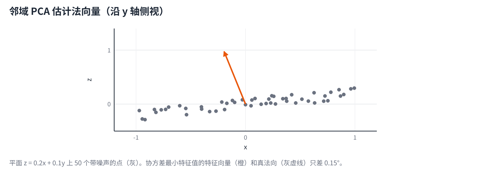
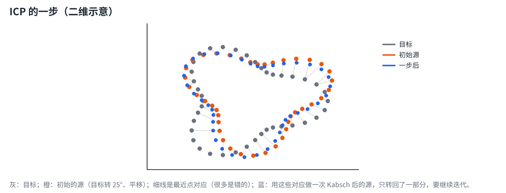
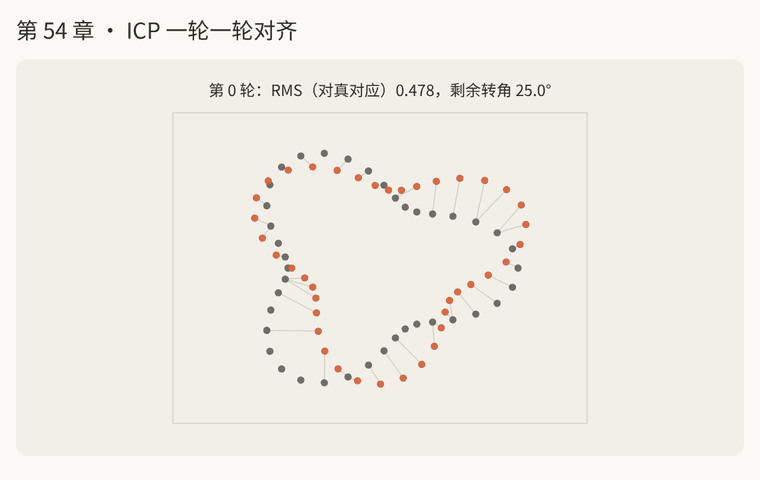

第 54 章 · 点云与配准：KD 树、法向量、Procrustes / Kabsch、ICP
本地运行
git clone https://github.com/wikieden/math-and-eval-stats
cd math-and-eval-stats/code/notebooks
pip install jupyterlab torch numpy
jupyter lab ch54_point_cloud.ipynb也可以下载后直接用 VS Code 打开 .ipynb 运行。需要 GPU 的章节在 Colab 里选「代码执行程序 → 更改运行时类型 → GPU」。
本章回答：几十万个点里找最近邻，为什么不用一个个比？点云的法向量怎么算？给定两组对应点，最优旋转怎么用 SVD 一步求出来，什么时候会得到一个“镜像”？ICP 为什么要反复“找对应 → 求位姿”？点到点和点到面差在哪？
讲解日期：2026-11-25 · 上一章：第 53 章 多视几何 · 下一章：第 55 章 SLAM 的优化
对应原文：Barfoot 2emath-and-eval-stats/materials/text/books/barfoot-state-estimation-robotics-2e.txt（§9.1 点云配准，目录 L325：用 SVD 求最优旋转）；PointNetmath-and-eval-stats/materials/text/papers/pointnet-1612.00593.txt（点云的置换不变性 L162–L185，第 63 章细讲）
本章缩写：NN = Nearest Neighbor（最近邻）；KD 树 = k-dimensional tree（k 维树）；PCA = Principal Component Analysis（主成分分析）；ICP = Iterative Closest Point（迭代最近点）；Procrustes / Kabsch = 用 SVD 求两组点之间最优旋转的方法（Procrustes 是希腊神话人物，Kabsch 是提出者的姓）；RMS = Root Mean Square（均方根）。全部缩写见 附录 · 缩写与术语表
讲解
第一步：最近邻与 KD 树（2026-11-25）
类比：查字典不会从第一页翻起。 KD 树按坐标轴轮流把空间一分为二，查询时先下到所在的小格子，再只检查可能更近的邻居格子。
暴力最近邻每次查询算 n 个距离；KD 树建树 O(n log n)，低维下每次查询平均 O(log n)。
例子（2 万个随机 3D 点、200 次查询）：KD 树和暴力结果的最大差 5.6 × 10⁻¹⁷（完全一样）；暴力每次要算 20000 个距离，KD 树平均只访问几十个节点。
维度高了（几十维以上）KD 树退化，要换成近似最近邻（HNSW、IVF 等，第 60 章的地点识别用）。
一句话：KD 树把低维最近邻查询从 O(n) 降到约 O(log n)；高维要用近似最近邻。
第二步：法向量 = 局部协方差最小特征值的特征向量（2026-11-25）
一个点附近的 k 个邻居近似落在一个小平面上：沿平面方向方差大，沿法向方差最小。对邻居做 PCA（第 11、12 章）：
例子（平面 z = 0.2x + 0.1y 上 50 个点加 0.005 的噪声）：估计 (−0.196, −0.100, 0.976)，真值 (−0.195, −0.098, 0.976)，夹角 0.15°。
法向量的符号不确定（±n 都对），一般让它朝向传感器。三个特征值的比例还能区分“平面 / 线 / 散点”，曲率 ≈ λ_min/Σλ。

图 54-1 · 平面上 50 个带噪声的点（侧视），橙色箭头是 PCA 最小特征向量（法向量），灰虚线是真法向，两者几乎重合一句话：局部协方差最小特征值的方向就是法向量；特征值比例还告诉你局部是面、线还是乱点。
第三步：Procrustes / Kabsch：有对应时，最优旋转一步求出（2026-11-25）
已知对应点对 (p_i, q_i)，求 R、t 使 Σ‖Rp_i + t − q_i‖² 最小（Barfoot §9.1）：
- 去中心：t 的最优解让两组点的质心对齐，p'_i = p_i − p̄，q'_i = q_i − q̄；
- H = Σp'_i q'_iᵀ = UΣVᵀ（SVD）；
- R = V diag(1, 1, det(VUᵀ)) Uᵀ，t = q̄ − Rp̄。
中间那个 det 修正很关键：不加它，SVD 给出的是“最优正交矩阵”，可能是行列式为 −1 的反射。
例子（4 个点，目标是源的镜像）：不修正 det = −1（反射，不是旋转）；修正后 det = 1。点有噪声、或者点几乎共面时最容易出这个问题。
一句话：去中心后 H = Σp'q'ᵀ 做 SVD，R = V diag(1, 1, det(VUᵀ))Uᵀ；最后那个 det 防止得到反射。
第四步：点到点 vs 点到面（2026-11-25）
扫描到的两片点云不是同一组点，“对应”只是最近的那个点，它和真对应之间可能沿表面错开。
| 偏差 | 点到点 ‖p − q‖ | 点到面 |(p − q)·n| |
|---|---|---|
| 沿表面错开 0.1 | 0.100 | 0.000 |
| 离开表面 0.1 | 0.100 | 0.100 |
点到面只罚垂直于表面的误差，允许点沿表面滑动，所以在平整的墙、地面上收敛快得多；代价是没有闭式解（要线性化求解）、需要法向量（第二步）。
一句话：点到面误差 (p − q)·n 不罚沿表面的滑动，在结构化场景里收敛远快于点到点。
第五步：ICP：没有对应，就反复“找最近点 → 求位姿”（2026-11-25）
类比：拼两张有重叠的地图，先粗略对上，找每个点的“最近邻居”当对应，按这些对应挪一下，再重新找。
- 对源里的每个点，在目标里找最近点（KD 树）当对应；
- 用第三步（或点到面）求 R、t；
- 把源变换过去，重复直到误差不再下降。
例子（目标是 300 个随机点，源 = 目标转 15°、平移 0.1）：初始 RMS 0.268；一次“最近邻对应 + Kabsch”后 0.227，还差 12.9°。
第一次的“最近点”大多是错的对应，所以一步只能走一小段，要反复迭代；初始误差太大（大于点间距、或者转角很大）时会收敛到错误的局部最优，所以 ICP 通常需要一个好的初值（IMU、里程计、或全局特征配准）。

图 54-2 · 俯视：灰点是目标，橙点是初始的源，蓝点是一步 ICP 后的源；对应线（细线）里有很多是错的，所以一步只转回了一点场景代码：Open3D 的点到面 ICP（真实库调用；本书环境没装 Open3D，没跑过）：
import open3d as o3d
tgt.estimate_normals(o3d.geometry.KDTreeSearchParamHybrid(radius=0.1, max_nn=30)) # 第二步：PCA 求法向量
res = o3d.pipelines.registration.registration_icp(
src, tgt, max_correspondence_distance=0.05, init=T0,
estimation_method=o3d.pipelines.registration.TransformationEstimationPointToPlane())
一句话：ICP = 反复用最近点当对应再求位姿；依赖好的初值，点到面版收敛更快。
动画演示：ICP 一轮一轮对齐

可交互版：animations/54-point-cloud.html（滑块调 ICP 轮数和初始转角）。
怎么看：
- 灰色是目标点云（二维的一条曲线采样），橙色是源；细线是这一轮的最近点对应（第五步）；
- 每一轮用对应求 Kabsch，源转回一点，对应变准、细线变短；右上角是 RMS 和剩余转角；
- 把初始转角拉到 90° 以上：三叶草有三重对称，ICP 停在剩余转角约 120° 的姿态，形状看起来对上了、对应却全错（局部最优）。
练习与作答记录
题 1（第二步）：三个邻居点 (0, 0, 0)、(1, 0, 0)、(0, 1, 0)，局部协方差的最小特征向量是什么？
作答：（待作答）
题 2（第三步）：源点 (1, 0)、(0, 1)，目标点 (0, 1)、(−1, 0)（二维），去中心后求最优旋转角。
作答：（待作答）
题 3（第四、五步）：在一条长走廊里（两面平行的墙）做 ICP，沿走廊方向的平移为什么估不准？点到面能不能解决？
作答：（待作答）
口诀
KD 树查邻居，低维 log n，高维换近似；
法向量是局部协方差最小的那个方向；
去中心做 SVD，R 等于 V diag(1, 1, det) Uᵀ，别得反射；
点到面只罚垂直误差，平面上收敛快；
ICP 找最近点、求位姿、再找，初值要好。
本章复习卡片
ST177（KD 树与法向量估计）、ST178（Procrustes / Kabsch 与反射修正）、ST179（ICP、点到点与点到面）。练习做完后，按答错、卡住的地方补上。
附录 · 延伸阅读
留给以后深入学习用，不影响本章主线。★ 是建议先读的。
推荐阅读
| 读什么 | 读哪里 | 读它为了什么 |
|---|---|---|
| ★ Barfoot 2e | §9.1 点云配准 | 用 SVD 求最优旋转的推导（含 det 修正） |
| 第 12 章 SVD 与最小二乘 | 全章 | SVD 的意义 |
| 第 19 章 李群入门 | 全章 | 位姿更新、点到面 ICP 的线性化 |
| PointNet（Qi 2017） | §4 | 学习的点云特征（第 63 章） |
| Rusinkiewicz & Levoy《Efficient Variants of the ICP Algorithm》（本地未归档） | 全文 | ICP 各种变体的比较 |
数学原理
- 质心对齐：对 t 求导为 0 ⇒ t = q̄ − Rp̄。
- Procrustes：min Σ‖Rp' − q'‖² ⇔ max tr(RᵀΣq'p'ᵀ)；H = UΣVᵀ 时最优 R = VUᵀ（正交），限制 det = 1 时把最小奇异值对应的方向翻号。
- 法向量：最小化 Σ((p_i − p̄)·n)² s.t. ‖n‖ = 1 ⇒ n 是协方差最小特征向量（瑞利商，第 31 章）。
- ICP 的收敛：每一步“找最近点”和“求位姿”都不增加误差，所以单调下降，但只保证局部最优。
公式清单
| 公式 | 意思 |
|---|---|
| \(n = \arg\min\text{eig}(C)\) | 法向量 |
| \(H = \sum p'_iq'^\top_i = U\Sigma V^\top\) | Kabsch |
| \(R = V\text{diag}(1, 1, \det(VU^\top))U^\top\)，\(t = \bar q - R\bar p\) | 最优旋转与平移 |
| \(\lvert(Rp + t - q)\cdot n\rvert\) | 点到面误差 |
代码对照：把本章的数字用代码算一遍
代码在仓库本地
math-and-eval-stats/solutions/chapter-code/ch54_point_cloud.py，配套测试tests/test_ch54.py：
bash cd math-and-eval-stats/solutions/chapter-code uv run python ch54_point_cloud.py uv run pytest tests/test_ch54.py
讲义 ↔ 代码：
| 讲义 | 公式 | 写法 | 跑出来 |
|---|---|---|---|
| 第一步 KD 树 | cKDTree | nn_compare() |
和暴力一致 |
| 第二步 法向量 | 最小特征向量 | normal_from_neighbors() |
夹角 0.15° |
| 第三步 Kabsch | SVD + det | kabsch(p, q, fix) |
det −1 → 1 |
| 第四步 残差 | 点到点 / 点到面 | residuals(p, q, n) |
0.1 / 0 |
| 第五步 ICP 一步 | 最近点 + Kabsch | icp_one_step() |
0.268 → 0.227 |
关键几行：
w, v = np.linalg.eigh(np.cov((p - p.mean(0)).T)); n = v[:, 0] # 最小特征值的特征向量
u, _, vt = np.linalg.svd(p.T @ q); d = np.sign(np.linalg.det(vt.T @ u.T))
return vt.T @ np.diag([1, 1, d]) @ u.T # 带反射修正的 Kabsch
代码里才看得到的 3 件事：
eigh的特征值从小到大排：所以最小特征值的特征向量是v[:, 0]；符号由np.sign(v[2, 0])统一成朝上。- ICP 只跑了一步：完整的“循环到收敛”的点到点 ICP 和 Kabsch 一起留给自己写（里程碑 ME-M33）。
- 一步后的残余转角从旋转矩阵算：(tr R − 1)/2 = cos θ（第 19 章的 Log）。
自己改一改（不影响练习答案）：
- 把
icp_one_step的初始转角改成 5°，一步后还剩多少？ - 在
normal_from_neighbors里只用 5 个邻居，夹角误差变成多少？